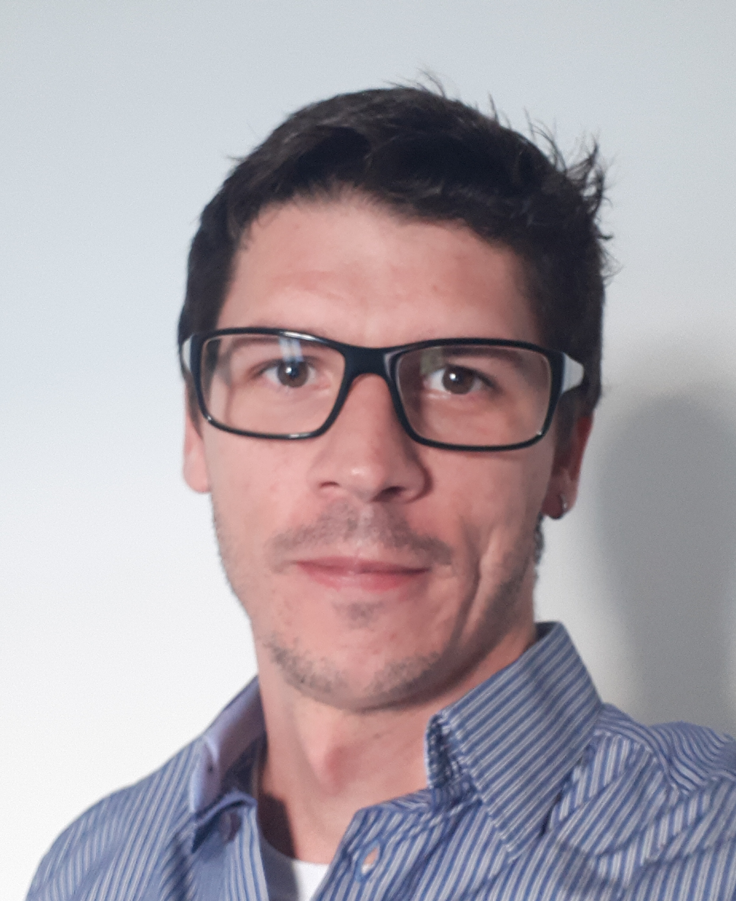
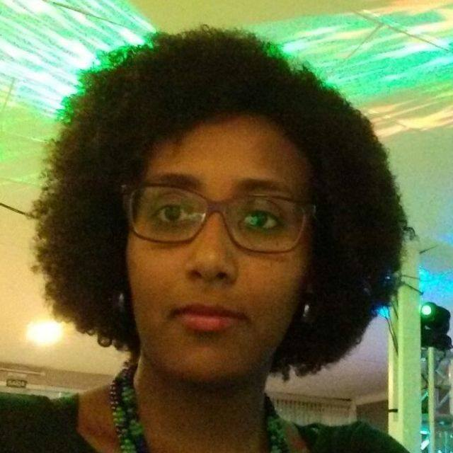
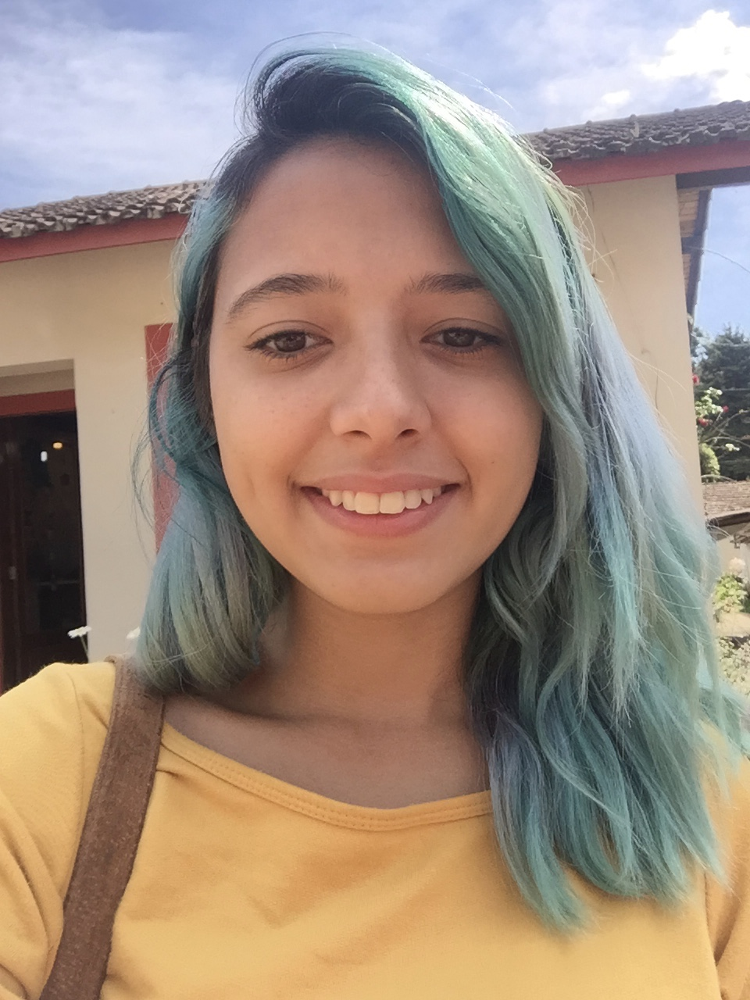
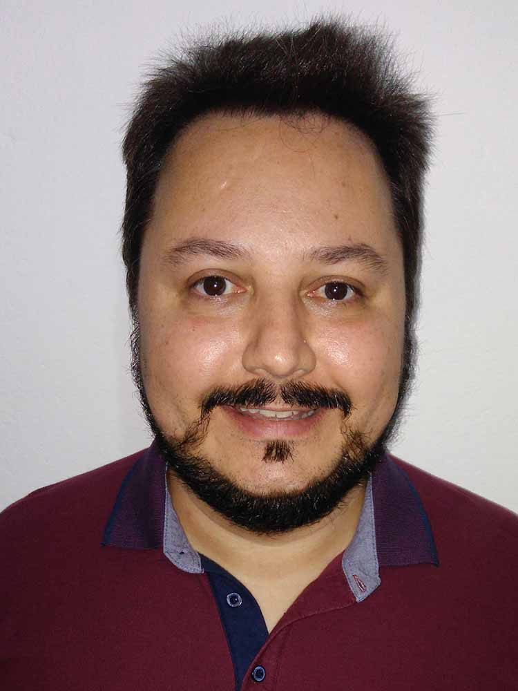
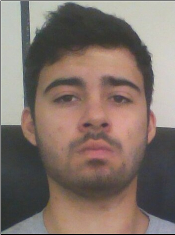
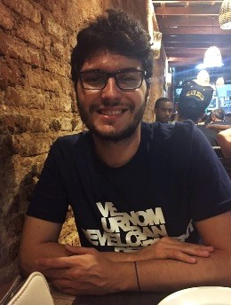

Coordinator

|
Prof. Martin Tygel
Coordinator and Principal Investigator tygel at ime.unicamp.br Lattes ResearchGate |
Prof. Martin Tygel received M.S. (1976) and Ph.D. (1979) degrees in mathematics from Stanford University. In 1983, he joined UNICAMP where he is now a Professor Emeritus of University of Campinas (UNICAMP). In 2002, he received EAGE’s Conrad Schlumberger Award and was awarded the 2017 Honorary Lecturer for Latin America by the Society of Exploration Geophysicists (SEG). Prof. Tygel has a long experience in carrying out projects which involves academia and the oil industry. His research interests are in methodologies and algorithms of seismic processing, imaging and inversion that have a sound basis on wave propagation and find practical application to exploration and monitoring of hydrocarbon reservoirs.
Staff

|
Prof. Edson Borin
Principal Investigator edson at ic.unicamp.br Lattes GoogleMyCitations |
PhD in Computer Science, Prof. Edson Borin is currently the head of the Department of Computer Systems at the Institute of Computing (IC/UNICAMP) and was a research scientist at the Intel Labs, in Californa, USA.

|
Dr. Jorge Henrique Faccipieri Junior
Project Manager and Researcher jorge at ggaunicamp.com Lattes ResearchGate |
PhD in Science and Petroleum Engineering at University of Campinas (FEM/UNICAMP).

|
Dr. Tiago Antonio Alves Coimbra
Lead Researcher coimbra at ggaunicamp.com Lattes |
PhD in Applied Mathematics at the Institute of Mathematics, Statistics and Scientific Computing at University of Campinas (IMECC/UNICAMP).
|
Dra. Sandra Eliza Fontes de Avila
Professor PhD I State University of Campinas (UNICAMP) sandra at ic.unicamp.br Lattes |
PhD in Computer Science, with a double degree from the Federal University of Minas Gerais (UFMG) and the Université Pierre et Marie Curie (UPMC Sorbonne, Paris 6)
|
Dr. Charles Boulhosa Rodamilans
Professor PhD Mackenzie charlesrodamilans at gmail.com Lattes |
PhD in Computer Engineering at University of São Paulo (USP)
|
Dr. Rodrigo Bloot
Researcher rgbloot at gmail.com Lattes |
PhD in Applied Mathematics at the Institute of Mathematics, Statistics and Scientific Computing at University of Campinas (IMECC/UNICAMP).

|
Dr. Jose Fernando Gamboa Penaloza
Senior Geophysical Processing gamboa at ggaunicamp.com Lattes |
PhD at the Program of Petroleum Science and Engineering at University of Campinas (FEM/UNICAMP).
|  |
Dr. Alexandre William de Camargo
Researcher acamargo at ggaunicamp.com Lattes |
PhD in Applied Mathematics at the Institute of Mathematics, Statistics and Scientific Computing at University of Campinas (IMECC/UNICAMP).
|
Dr. Marcelo Oliveira da Silva
Researcher msilva at ggaunicamp.com Lattes |
PhD in Applied Mathematics at the Institute of Mathematics, Statistics and Scientific Computing at University of Campinas (IMECC/UNICAMP).

|
Dany Rueda Serrano
Seismic Processing Geophysicist dany at ggaunicamp.com Lattes |
M.Sc. at the Program of Petroleum Science and Engineering at University of Campinas (FEM/UNICAMP).
|  |
Tainá Souza
Geophysicist tsouza at ggaunicamp.com Lattes |
M.Sc. Student at Electrical Engineering at University of Campinas (FEEC/UNICAMP).

|
Caian Benedicto
Lead Software Developer caian at ggaunicamp.com Lattes ResearchGate GitHub |
B.Eng. in Computer Engineering by University of Campinas (FEEC/UNICAMP) and former visiting student of Computing Science at University of Alberta (UofA).

|
Alcides Goldoni Junior
System Administrator goldoni at ggaunicamp.com Lattes GitHub |
Undergraduate student of Applied Mathematics at University of Campinas (IMECC/UNICAMP).

|
João Renato Domingos do Sacramento
Project Manager and System Administrator joao.renato at ggaunicamp.com Lattes |
Computer Science student at the Institute of Computing at the University of Campinas (IC/UNICAMP).
|
Paulo Geovani Almeida Torres
Administrative Assistant paulo at ggaunicamp.br Lattes |
Undergraduate student of Statistic at University of Campinas (IMECC/UNICAMP).

|
João Henrique Speglich
Software Developer joaospeglich at ggaunicamp.com Lattes |
Computer Engineering student at the Institute of Computing at the University of Campinas (IC/UNICAMP)

|
Nicholas Torres Okita
Software Developer nicholas.okita at ggaunicamp.com Lattes |
Computer Engineering student at the Institute of Computing at the University of Campinas (IC/UNICAMP)
|
Nycholas Maia
Software Developer nyckmaia at ggaunicamp.com Lattes |
B.Eng. in Computer Engineering by Integrated Metropolitan faculty of Campinas (METROCAMP)
|
Rafael Aparecido Granzotti
Software Developer rgranzottii at ggaunicamp.com Lattes |
B.in Applied Mathematics at the Institute of Mathematics, Statistics and Scientific Computing at University of Campinas (IMECC/UNICAMP).
|
Lucas de Magalhães Araújo
Software Developer lucas at ggaunicamp.com Lattes |
B.in Computer Scienc at the Institute of Computing at the University of Campinas (IC/UNICAMP)
|  |
Thamiris Florindo Coelho
Software Developer thamiris at ggaunicamp.com Lattes |
Computer Engineering student at the Institute of Computing at the University of Campinas (IC/UNICAMP)
|  |
Rene Juliano Martins
Systems Development Analyst rene at ggaunicamp.com Lattes |
Systems Analysis at Pontifical Catholic University of Campinas (PUC Campinas)

|
José Ribeiro Neto
Software Developer joseribeiro at ggaunicamp.com Lattes |
Computer Engineering student at the Institute of Computing at the University of Campinas (IC/UNICAMP)
Ph.D. Students
|
Antonio Carlos Guimarães Junior
Computer Science Ph.D. Student antonio at ggaunicamp.com |

|
Gustavo Barroso Dias Ignácio
Geophysics Ph.D. Student ignaciogbd at ggaunicamp.com Lattes |

|
Jeferson Rech Brunetta
Computer Science Ph.D. Student jeferdjex at gmail.com Lattes |
|
Otávio Oliveira Napoli
Geophysics Ph.D. Student otavio.napoli at ggaunicamp.com Lattes |
M.Sc. Students

|
Eva Maia Malta
Computer Science M.Sc. Student eva.maia.malta at hotmail.com Lattes |
|
Jonlenes Silva de Castro
Computer Science M.Sc. Student jonlenes at outlook.com Lattes |
|
William Felipe da Cunha Tavares
Computer Science M.Sc. Student william at ggaunicamp.com Lattes |
Undergraduate Students
|
Fernando Gonçalves Rocha
Undergraduate Researcher fernando at ggaunicamp.com |
|
Luan Soares de Freitas
Undergraduate Researcher luan at ggaunicamp.com |
|  |
Marcelo Martins Vilela Filho
Undergraduate Researcher m202619 at g.unicamp.br |
|  |
Murilo Guidetti Andrietta
Undergraduate Researcher mgandrietta at gmail.com |
|
Naomi Takemoto
Undergraduate Researcher naomitkm1 at gmail.com |
|
Pedro Rodrigo Ramos Morelli
Undergraduate Researcher pedro.morelli96 at gmail.com |
|
Renan Clarindo Amorim
Undergraduate Researcher rclamorim at gmail.com |